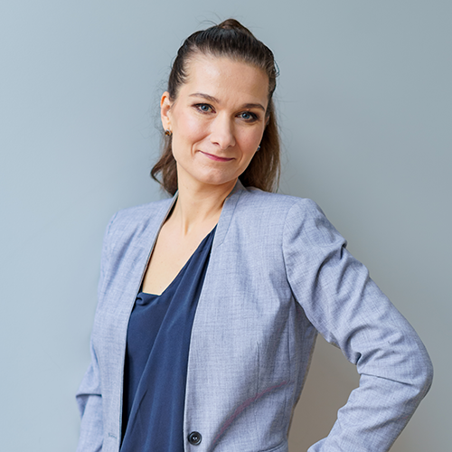

lek.wet Magdalena Cymerman
specjalista weterynaryjnej diagnostyki laboratoryjnej
Medycyna towarzyszyła mi od zawsze. Jako dziecko uwielbiałam spędzać czas w laboratorium, w którym pracowali rodzice. Weterynarię wybrałam szukając kierunku, który zaspokoi moje biologiczno - medyczne
zainteresowania. W trakcie pierwszych lat nauki zrozumiałam, że diagnostyka laboratoryjna jest kluczową dziedziną medycyny, bez poznania której nie będę dobrym lekarzem. Chciałam nauczyć się czytania wyniku jak książki, której epilogiem
jest diagnoza.
Szczególne miejsce w mojej pracy zajmuje hematologia. Codziennie zachwycam się tym mikroświatem i odkrywam jak wiele krew może powiedzieć o pacjencie. Jestem lekarzem praktykiem - internistą, z zacięciem hematologicznym. Od 9 lat
jestem także kierownikiem laboratorium weterynaryjnego.
Bardzo lubię dzielić się tym co wiem i co umiem. Miałam przyjemność prowadzić zajęcia z hematologii dla lekarzy oraz techników, oraz współtworzyć artykuły dotyczące diagnostyki laboratoryjnej.
Prywatnie jestem mamą dwóch chłopców Tadzia i Rysia, którzy są dla mnie największą miłością, inspiracją i wyzwaniem.
lek.wet Maria Skrzeczyńska
Zamiłowanie do weterynarii i uczenia innych towarzyszą mi przez niemal całe życie. Jako dziecko postanowiłam zostać lekarzem weterynarii i konsekwentnie dążyłam do tego celu.
Od 2012 roku pracuję w jednym z warszawskich laboratoriów, gdzie niemal codziennie widzę jak różnorodny i nieoczywisty może być obraz krwi i jak wiele można z niego wyczytać.
Jestem też lekarzem internistą, a badanie hematologiczne stanowi istotną część mojej pracy z pacjentem.
Dzięki zdobywanemu przez wiele lat doświadczeniu mam możliwość realizowania swojej drugiej pasji, jaką jest przekazywanie wiedzy. Publikuję artykuły dotyczące diagnostyki laboratoryjnej
i prowadzę szkolenia dla lekarzy weterynarii.
Również w życiu prywatnym odnajduję przyjemność w uczeniu, odkrywając z dziećmi edukację domową. Relaksuję się na świeżym powietrzu, jeżdżąc na nartach, konno lub na rowerze.
lek.wet Anna Jarosińska
Weterynaria nie była moim pierwszym wyborem, ale jest ostatnim. Jako dziecko chciałam być archeologiem, malarzem oraz panią od religii. Po maturze rozpoczęłam studia na uniwersytecie medycznym, jednak za namową
znajomej lekarki weterynarii podjęłam studia na SGGW w Warszawie i już od pierwszych zajęć z histologii, uświadomiłam sobie jak fascynujący jest mikroświat komórek.
W trakcie studiów współorganizowałam konferencje specjalistyczne,
byłam członkiem koła naukowego, aż w końcu trafiłam do laboratorium weterynaryjnego, gdzie pracuję do dziś. Oprócz tego jestem również nauczycielką w technikum weterynaryjnym, gdzie staram się jak najlepiej kształcić tak ważny w procesie
diagnostyczno - terapeutycznym personel średni.
Prywatnie jestem miłośniczką przyrody oraz kryminałów, a moim największym marzeniem jest spotkać wilka.